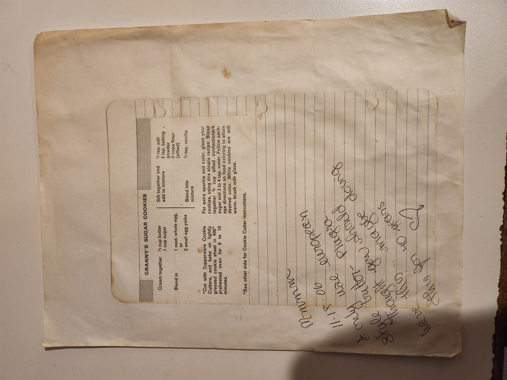

Granny's Sugar Cookies¶
Ingredients¶
- ½ cup butter
- 1 cup sugar
- 1 medium whole egg or 2 small egg yolks
- ½ tsp. salt
- 2 tsp. baking powder
- 2 cups flour (sifted)
- ½ tsp. vanilla
Directions¶
- Cream together:
- ½ cup butter
-
1 cup sugar
-
Blend in:
-
1 medium whole egg, or 2 small egg yolks
-
Sift together and add to mixture:
- ½ tsp. salt
- 2 tsp. baking powder
-
2 cups flour (sifted)
-
Blend into mixture:
-
½ tsp. vanilla
-
Cut with cookie cutters. Place on lightly greased cookie sheet.
- Bake at 400°F for 8 to 10 minutes.
Optional Glaze¶
For extra sparkle and color:
- ¾ cup sifted confectioner’s sugar
- 3 to 4 tsp. water
- Food coloring (as desired)
Instructions:
Blend sugar and water. Add food coloring to reach desired color. While cookies are still warm, brush with glaze.
